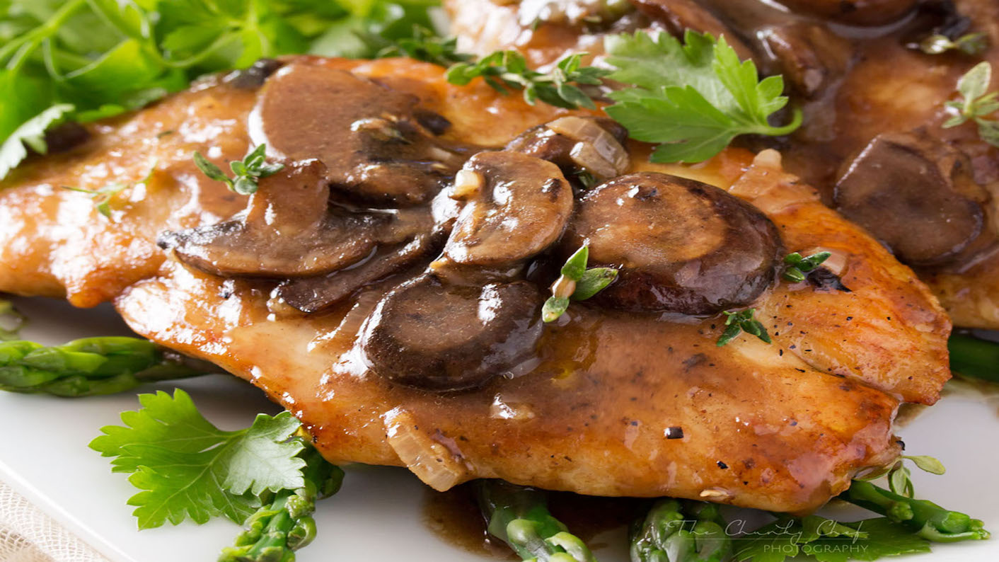
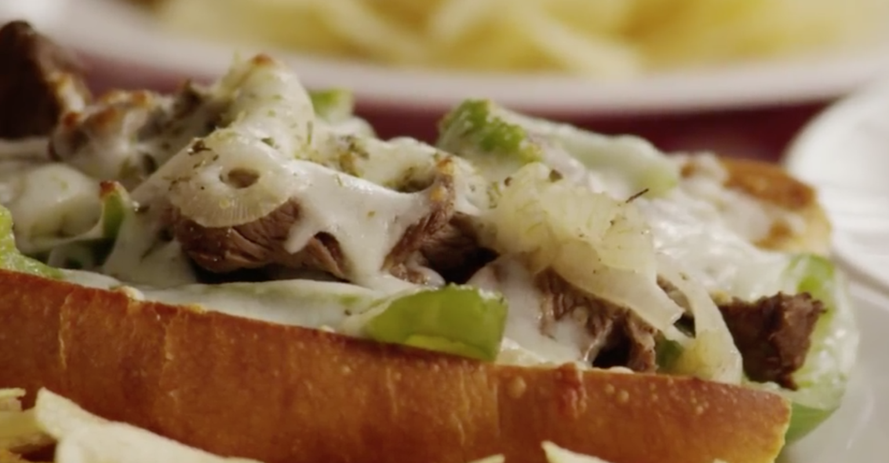
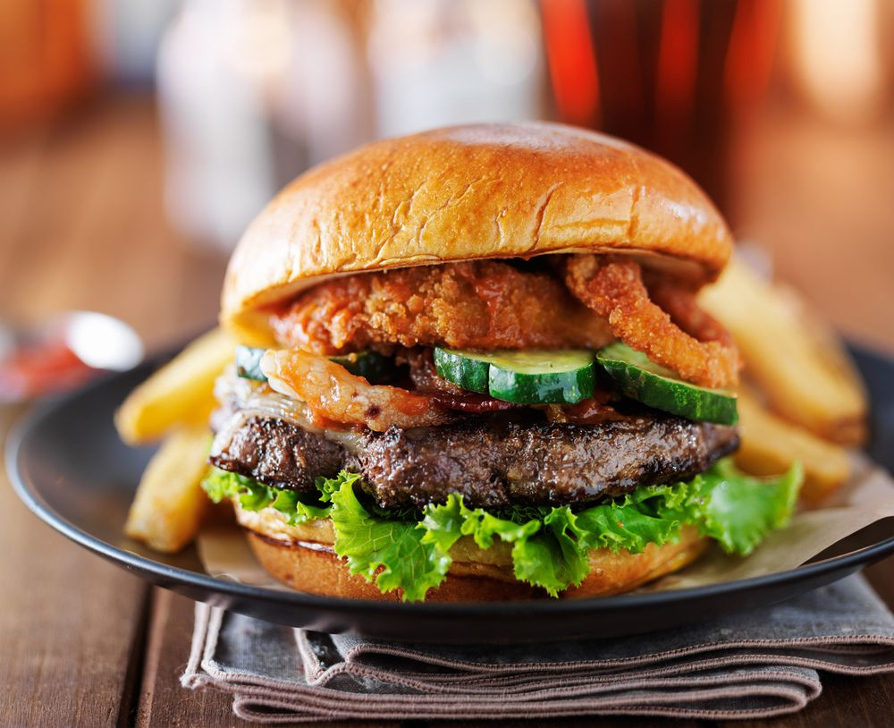
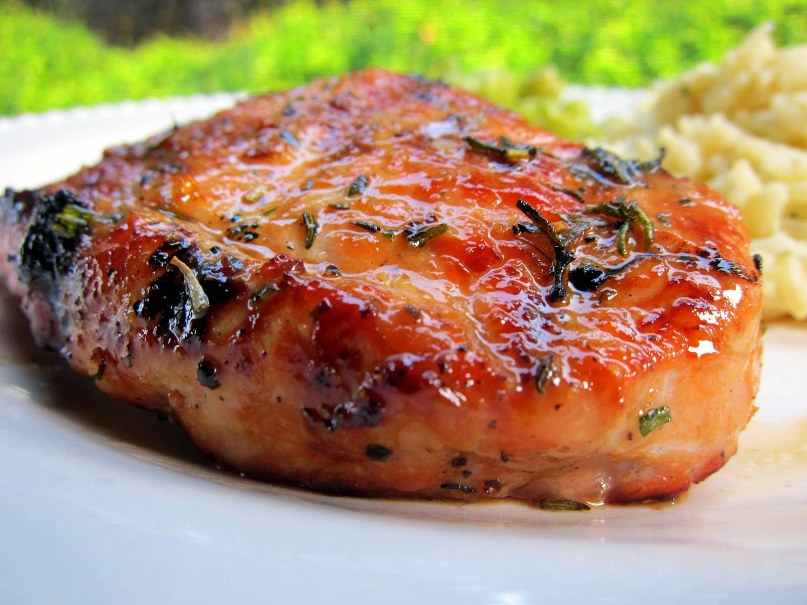
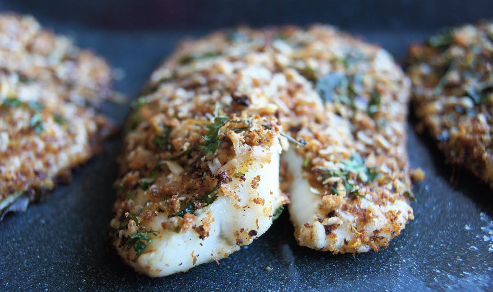
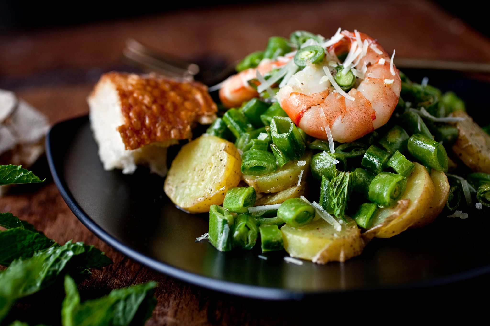
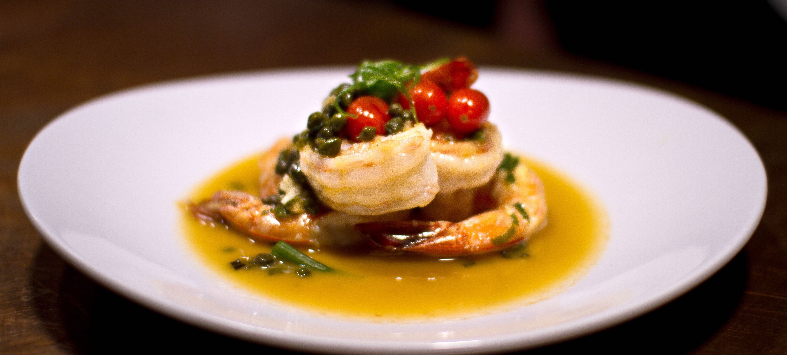
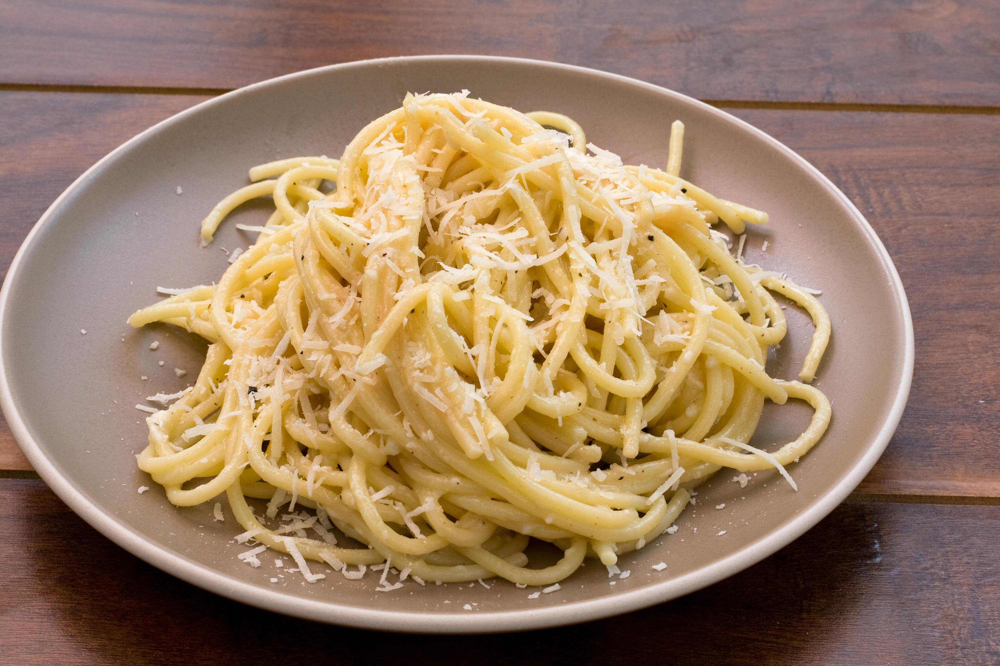

Lazy Chef 30-min Recipes
Cooking has never been so easy yet tasty.
JUST BE LAZY.
DINNER

Easier Chicken Marsala
Ready in: 30 min
Ready in: 30 min
- In a medium bowl, stir together the flour, garlic salt, pepper, and oregano. Dredge chicken in the mixture to lightly coat.
- Heat olive oil and butter in a large skillet over medium heat. Fry the chicken in the skillet for 2 minutes, or until lightly browned on one side. Turn chicken over, and add mushrooms. Cook about 2 minutes, until other side of chicken is lightly browned. Stir mushrooms so that they cook evenly.
- Pour Marsala wine over the chicken. Cover skillet, and reduce heat to low; simmer for 10 minutes, or until chicken is no longer pink and juices run clear.

Philly Cheesesteak Sandwich with Garlic Mayo
Ready in: 30 min
Ready in: 30 min
- In a small bowl, combine mayonnaise and minced garlic. Cover, and refrigerate. Preheat oven to 500 degrees F (260 degrees C).
- Heat oil in a large skillet over medium heat. Saute beef until lightly browned. Stir in green pepper and onion, and season with salt and pepper. Saute until vegetables are tender, and remove from heat.
- Spread each bun generously with garlic mayonnaise. Divide beef mixture into the buns. Top with shredded cheese, and sprinkle with oregano. Place sandwiches on a baking pan.
- Heat sandwiches in preheated oven, until cheese is melted or slightly browned.

Chris' Bay Area Burger
Ready in: 30 min
Ready in: 30 min
- Preheat an outdoor grill for high heat. Mix together the ground beef, garlic, olive oil, salt, pepper, and basil. Divide into four balls, and flatten into patties.
- Cook the patties for about 3 to 5 minutes on each side, or to desired doneness. The internal temperature should be at least 160 degrees F (70 degrees C). Remove from grill and place onto hamburger buns. Top with desired toppings and condiments.

World's Best Honey Garlic Pork Chops
Ready in: 25 min
Ready in: 25 min
- Preheat grill for medium heat and lightly oil the grate.
- Whisk ketchup, honey, soy sauce, and garlic together in a bowl to make a glaze.
- Sear the pork chops on both sides on the preheated grill. Lightly brush glaze onto each side of the chops as they cook; grill until no longer pink in the center, about 7 to 9 minutes per side. An instant-read thermometer inserted into the center should read 145 degrees F (63 degrees C).

Broiled Tilapia Parmesan
Ready in: 15 min
Ready in: 15 min
- Preheat your oven's broiler. Grease a broiling pan or line pan with aluminum foil.
- In a small bowl, mix together the Parmesan cheese, butter, mayonnaise and lemon juice. Season with dried basil, pepper, onion powder and celery salt. Mix well and set aside.
- Arrange fillets in a single layer on the prepared pan. Broil a few inches from the heat for 2 to 3 minutes. Flip the fillets over and broil for a couple more minutes. Remove the fillets from the oven and cover them with the Parmesan cheese mixture on the top side.
- Broil for 2 more minutes or until the topping is browned and fish flakes easily with a fork. Be careful not to over cook the fish.

Shrimp and Sugar Snap Peas
Ready in: 30 min
Ready in: 30 min
- Bring a large pot of lightly salted water to a boil. Add linguini pasta, and cook for 8 to 10 minutes or until al dente. Drain, reserving 1/4 cup liquid.
- Heat the olive oil and chili oil in a wok over medium-high heat. Mix in the shrimp, pea pods, and garlic. Cook and stir 2 minutes, until shrimp are almost opaque. Remove from heat, and set aside.
- Pour the wine into the wok, and bring to a boil. Cook until reduced by 1/3. Return shrimp, peas, and garlic to the wok, and stir in the reserved pasta water. Continue to cook and stir until shrimp are opaque. Remove wok from heat, and mix in the butter, lemon juice, and basil. Toss with the cooked pasta to serve.

Alaskan Cod and Shrimp with Fresh Tomato
Ready in: 25 min
Ready in: 25 min
- Heat the olive oil in a skillet over medium-high heat; cook and stir the garlic in the oil until golden brown, taking care not to burn the garlic. Add the tomatoes and mix well until they release their juices. Stir in 1 teaspoon oregano.
- Place the cod and shrimp on the tomato mixture; season with salt. Cover skillet and simmer 3 minutes.
- Flip the cod and season again with salt and 1 tablespoon oregano; re-cover and cook another 3 minutes. Remove the cover and allow to cook until the juice evaporates slightly, 2 to 3 minutes.

Shrimp Durango
Ready in: 25 min
Ready in: 25 min
- Bring a large pot of water to boil, add fettuccine noodles and return water to boil. Cook until noodles are al dente. Drain well.
- Meanwhile, in a large skillet, melt butter over medium heat, add shrimp and cook about 3 minutes, until shrimp turn pink. Remove shrimp from heat and set aside.
- Pour wine and lime juice into the skillet used to cook the shrimp. Bring the mixture to a boil. Boil until the mixture is reduced by half, about 2 minutes. Return shrimp to skillet. Add cilantro, cayenne pepper and salt and pepper. Stir to heat the mixture through, about 2 minutes. Toss with pasta and serve.

Spaghetti Cacio e Pepe
Ready in: 23 min
Ready in: 23 min
- Bring a large pot of lightly salted water to a boil. Cook spaghetti in the boiling water, stirring occasionally until tender yet firm to the bite, about 10 minutes. Scoop out some of the cooking water and reserve. Drain spaghetti.
- Heat oil in a large skillet over medium heat. Add garlic and pepper; cook and stir until fragrant, 1 to 2 minutes. Add spaghetti and Pecorino Romano cheese.
- Ladle in 1/2 cup of reserved cooking water; stir until cheese is melted, about 1 minute. Add more cooking water until sauce coats spaghetti, about 1 minute more.